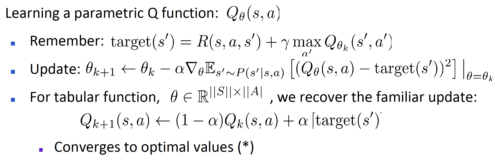
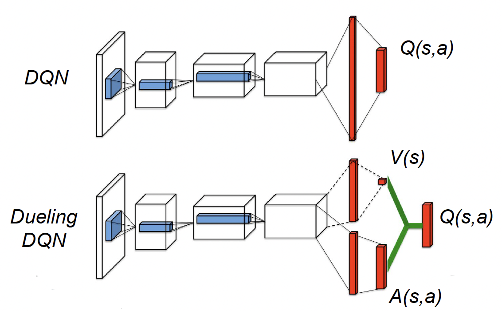

Core Lecture 3 DQN + Variants -- Vlad Mnih
Reinforcement Learning is interesting!

本讲讨论著名的DQN算法（Deep Q-Networks Algorithm）
一、对Q-Learning的简单复习
对于参数化后的Q函数

其中需要注意，对于tabular Q-Learning，每次更新Q函数之后相比于更新之前只对一个(s, a)组合的Q函数进行了改变，其他组合并没有发生变化；但是一般的Approximate
Q-Learning中进行更新时虽然出发点是对一个特定(s,
a)组合的Q值进行修正，但是由于参数化对状态进行了概括归纳(generalize)，这种改变同样会影响其他的状态-动作组合的Q函数值。本讲中我们着重考虑的情况是，由于参数化的方式十分多样难以选到合适的，不妨采用神经网络的方式对Q函数进行模拟，即确定一个Q-Network，输入是当前状态s与选择的动作a，输出是
二、DQN算法
正如左图所示，直接用神经网络替换模拟函数主要会面临两个困难。第一个是不稳定性，正如上边所分析的那样，由于每次更新不仅会改变当前状态-动作组合的Q函数值，由于generalize的特点，同样也会改变其他状态-动作组合的Q函数值，因此一个现在已经“调好”的合适Q函数值也可能在对别的状态进行调整的时候再度被改变，离开已经处在的最优情况。另一个困难是更新和路径相关，或者说更新被限制在路径之内，这对整体的探索和学习来说并不是一件好的事情。
DQN算法的高层观点（High-level idea）是：使Q-Learning看起来更像supervised learning，为了提升稳定性，有两个关键的技术手段，一个是replay buffer，另一个是target network
（1）replay buffer
之前所描述的一般的Q-Learning采用online update的方法进行更新，也就是伴随着学习过程的进行，每走一步（state变化一次）就会对Q网络进行一次更新，但是这种更新过于频繁，是导致不稳定情况出现的原因之一。因此我们引入replay buffer来降低更新的频次。具体来说，我们把每次状态的transition pair（s, a, s', r）组合存入有一定容量限制的replay buffer中，随着探索的不断进行buffer中数据量的规模也在不断增大，在加入新的pair的时候也会讲旧的pair删除，最终将buffer中的数据量维持在一个合适的规模（一般是one million左右）。在学习更新Q网络的时候，对buffer中的pairs进行采样（比如采样32个pairs），之后就这32个pairs的情况进行学习，也就是分别求它们的Q函数值与各自的target方差（或者是别的误差函数），之后再求和，针对这个量进行梯度下降的更新操作。通过设置replay buffer有效降低了Q网络更新的频率，增强了学习的稳定性。
（2）target network
target network的设立是上述High-level idea的一个直接体现。在Q-Learning的过程中，我们通过梯度下降的方式让当前的Q函数（在当前状态-动作组合的Q函数值）趋近于target，以达到优化的目的，但是伴随着Q函数每次的更新，用于target计算的Q函数也随之变化，也就是计算target的“标准”也是一直在变化的，跟随Q函数的变化而变化。回顾一下target的计算过程，当不涉及terminal状态的时候，有
我们通过greedy的方式计算target值，这和我们在训练当中选择action的策略（最新Q网络，
DQN的具体过程如左图所示，由于这个算法的重要性，在这里有必要对他的过程进行进一步的阐释。首先对replay buffer
注意到在上边叙述DQN算法的过程时，并没有直接说使用方差的方法计算Q函数值和target的误差，这是因为我们通常选择采用别的误差函数例如Huber loss
function，以其增强学习过程的鲁棒性。另外，神经网络训练的优化算法选择也会对Q网络的训练效果产生巨大的影响，实际上这也是deep reinforcement
learning的一个特点，神经网络训练的优化算法会对训练效果产生很大影响，通常会使用
我们通常会使用Atari平台上的游戏来测试RL算法，结合CNN的方法，已经取得了很好的效果。正如左图展示的那样，我们在一个名为Pong的游戏当中测试算法性能，可以看到不同局面下Q网络给出的值，可选的动作有no-op，up，down三种，在1号局面下虽然小球距离右侧的距离已经很近，但是网络判定现在的局面还可以不用急于作出反应；2号局面和1号局面很相近，但是形势更加“危急”一点，Q网络判定此时“up”这一action的Q函数值是正的，而另外两个都是负的，说明Q网络希望引导agent作出向上移动的决定，这和我们的认知是符合的。另外两个局面也可以一样解读，Q网络的预测和我们的认知基本相似，其效果相当可观。
三、Double DQN以及一些其他的改进
这一部分列举了几个对于DQN的改进，首先要解释一点，作者之所以把Double DQN着重强调并不是由于它相比于别的改进版本更为重要，完全是出于个人需要，因为作者目前正在使用的TD3算法（基于policy gradient算法，是DDPG的改进版本）借鉴了Double DQN的思路，因此在这里着重提一下便于之后使用。
（1）Double DQN
在
通过这种方式，可以有效减小upward bias，获得更好的学习效果
（2）Prioritized Experience Replay
在replay
buffer中存储着相当数量的transition，但是在DQN算法当中，每次学习时都是针对其随机采样，没有任何偏向性，但是不同transition的“学习价值”是不同的，有的transition可能Q函数值和target值差距很小，学习价值较低；相应的差别较大的transition学习价值较高，值得反复学习，因此Prioritized
Experience Replay采用Bellman error
（3）Dueling DQN
 Dueling DQN将Q函数值进行分解，分解成value/advantege两个部分
正如上图所示，相比于传统DQN，Dueling DQN的Q函数网络输出的不是单一的Q(s, a)，而是V(s)和A(s, a)两部分，通过这种方法就可以奇迹般地提高学习效果。